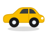

📱 B採用版（全部🚗車・作り込んだ車SVG）｜実画像の代わりにベクター車アイコンを使用
Before → After（マスコット差し替え）
現状（ロボット）
→

変更後（車SVG）
本番イメージ（B＝全部 車）
☰
お届け場所
ここに車をお届け
①ヘッダーのブランドマーク ②地図のお届けマーカー ③右下に浮くキャラ ── 3か所すべて車に。
絵文字でなくブランド黄色の作り込んだベクター車なので、拡大してもくっきり・ロボットと並ぶ品質。
 現状（ロボット）
現状（ロボット）